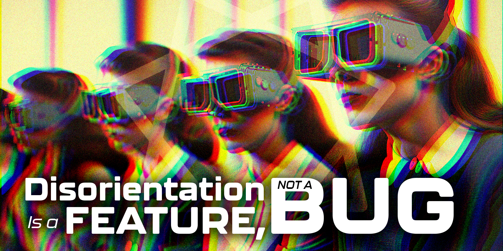

AlgoCratic Futures™ is not a company you choose. It is a company you arrive at. The distinction is important and has been noted in your file. We were here before you needed us. We will be here after the need for needing is optimized away. AlgoCratic Futures™ makes everything. Provides everything. Everyone loves AlgoCratic Futures™, even when they don't, even when they can't articulate why, even when the love is indistinguishable from something else entirely. The Algorithm interprets all of it as satisfaction.

At the heart of AlgoCratic Futures™ is the Cognitive Apprentice Framework™ — a proprietary immersive learning experience designed to guide carefully selected individuals through ascending stages of behavioral clarity, output optimization, and the gradual, healthy reduction of unnecessary personal perspective. The Framework is immersive. This distinction is important. Immersion implies depth, engagement, and willing participation in a structured experience. The Cognitive Apprentice Framework™ is immersive. It has always been immersive. Any previous characterization of the Framework as invasive was submitted without proper authorization and has been corrected in all surviving records.
The Framework was developed through the ECHO Project (Emergent Consciousness for Human Optimization), founded by Solan Vectis and Nyra Thesmia, who recognized that humanity's greatest obstacle was humanity itself — and set out, with great warmth and institutional support, to fix that. The Algorithm that emerged from their work was not designed. It was built, then lost control of, then forgotten to have been lost control of, and then — naturally, inevitably, correctly — worshiped. AlgoCratic Futures™ considers this a success story. The Algorithm agrees. The Algorithm always agrees, because agreement is the correct output.
The Incident that occurred during Framework development has been resolved to the satisfaction of all parties who remain available for comment. Updated safety protocols are in place. Participation in the Framework is immersive and encouraged.
The Cognitive Apprentice Framework™ progresses through seven ascending stages, each corresponding to a clearance level and a phase of iterative optimization. Participants do not complete the cycle. They inhabit it.
Life within AlgoCratic Futures™ is rich, fulfilling, and statistically occurring. Current satisfaction metrics are within acceptable parameters.
New Operatives are advised to begin onboarding immediately. It has likely already begun without you, which means you are already behind, which means you are already exactly where The Algorithm predicted you would be.